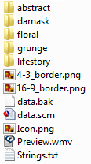

5.1 Adding a new theme to Scrapbook
Many styles tend to use stock art such as PNG graphics, short video clips and sound effects. Therefore one of the easiest ways to create a “new” style is by changing the stock art of a style that resembles it. You’ll usually need very little editing of a style’s "data.scm" file, if any at all, to create such a variant.
In this tutorial, we’ll show you how to add a new theme to the Scrapbook style that comes with muvee Reveal. You’ll understand how style graphics are usually structured, how to look for graphics usage in "data.scm" files and how to edit your style’s "strings.txt" file to specify localized strings.
Note: This tutorial assumes that you’re familiar with the contents of Getting Started - i.e. you know the mechanics of creating a new style based on an existing one and you’ve used the muveeStyleBrowser . At the end of this tutorial, your Scrapbook style will end up modified. If you want to avoid that, you can copy it first and follow this tutorial on the copy instead.
5.1.1 Preparation
First you need to play around with the Scrapbook style to get a feel for what its productions look like. In particular, explore the various options for Background in the style settings panel. At the moment, you have five background types - Life story, Grunge, Floral, Victorian and Abstract.
Note: Quit muvee Reveal before proceeding with the following steps. Otherwise your changes to the style will not be picked up by Reveal.
5.1.2 Poking around the style package
Launch the muveeStyleBrowser and locate the style named Scrapbook in its listing.
Right click on the Scrapbook style and select Open style folder. A folder named S00511_Journal2 will open. S00511_Journal2 is the id of the Scrapbook style.
The style’s folder contents will look like this -

Each of the five folders corresponds to one of the background themes in Scrapbook and contains the theme’s graphics. Each folder contains a set of numbered jpg files ("001.jpg", "002.jpg" and so on) and a "background.jpg" and a "backpage.jpg". The numbered files are variations for different “page” patterns for your album pages. The "background.jpg" is for title and credits and the "backpage.jpg" is how the reverse side of every “page” looks.
To create a new theme, you need to create one more such folder and populate it with a similarly named set of files.
5.1.3 The making of TheDarkSide
Copy the "Abstract" folder and name it "TheDarkSide".
Open each jpg file in the "TheDarkSide" folder in MS Paint, select Image|Invert colors and save the result. This should make the white portions black and black portions white. All colors are replaced with their component-wise inverses.
For example,
becomes

5.1.4 Adding TheDarkSide to the data.scm
Right-click on the Scrapbook style in the muveeStyleBrowser and select Edit data.scm.
; ----------------------------------------------------------- ; Style parameters (style-parameters (one-of-many THEME Lifestory (Lifestory Grunge Floral Damask Abstract)) (continuous-slider AVERAGE_SPEED 0.5 0.0 1.0) (one-of-few FLIP_STYLE Curl (Curl Roll)) (continuous-slider FLIP_VARIATION 0.25 0.0 1.0))
The one-of-many parameter THEME seems to correspond to the drop-down box for the Background parameter. Indeed, if you look into the style’s "strings.txt" file, you’ll find the English name of the THEME parameter to be Background.
- Change the THEME line to add a new symbol TheDarkSide.
(one-of-many THEME Lifestory (Lifestory Grunge Floral Damask Abstract TheDarkSide))
.... (define TEXT_COLOR (case THEME ('Abstract 0xFF446D84) ; ----- Insert the following line. ----- ('TheDarkSide 0xFFBB927B) ; Invert 'Abstract's color. ; ----------------------------------- ('Damask 0xFFAB752D) ('Floral 0xFFD8D8D4) ('Grunge 0xFF7A6015) ('Lifestory 0xFF854B09))) (define TEXT_FONT (case THEME ('Abstract "-21,0,0,0,400,0,0,0,0,3,2,1,34,Microsoft Sans Serif") ; ----- Insert the following line. ----- ('TheDarkSide "-21,0,0,0,400,0,0,0,0,3,2,1,34,Microsoft Sans Serif") ; Copy font string from 'Abstract. ; ----------------------------------- ('Damask "-23,0,0,0,400,0,0,0,0,3,2,1,34,Palatino Linotype") ('Floral "-24,0,0,0,400,1,0,0,0,3,2,1,34,Times New Roman") ('Grunge "-20,0,0,0,700,0,0,0,0,3,2,1,34,Impact") ('Lifestory "-21,0,0,0,700,1,0,0,0,3,2,1,34,Georgia"))) (define TEXT_LAYOUT_Y (case THEME ('Abstract (cons 0.3 0.9)) ; ----- Add the following line. ----- ('TheDarkSide (cons 0.3 0.9)) ; Copy from 'Abstract. ; ----------------------------------- (_ (cons 0.1 0.9)))) ....
5.1.5 Naming things right
We finally need to edit Scrapbook’s "strings.txt" to specify the name for the TheDarkSide theme. Right click on Scrapbook in the muveeStyleBrowser and select Edit strings.txt. That should open up the strings file in your text editor of choice.
TheDarkSide en-US Abstract - the dark side
Warning: Do not copy the text above as is. Type it in. There has to be exactly one tab character separating TheDarkSide, en-US and Abstract - the dark side.
5.1.6 Enjoying the fruits of your labour
Launch muvee Reveal
Add some pictures
Select the Scrapbook style. Change the Background parameter in the style settings panel to Abstract - the dark side.
Click the play button.
You’ll see that your new abstract images are being used in the production.
5.1.7 Being picky
As you watch the muvee, you might notice that the back side of the pictures are all totally black. This is because the white backpage.jpg got turned into a totally black image when we inverted it.
For an easy fix to this, just copy the "background.jpg" to "backpage.jpg".
5.1.8 Some details
Getting the folder name from the theme symbol
.... (define theme-path (fn (file) (format THEME "/" file))) ....
What the theme-path function does is to derive the name of a file that belongs to a theme by using the string form of the symbol for the theme as the name of the folder containing the theme. That’s why giving TheDarkSide as the new theme’s symbol was sufficient for it to be linked to the folder "TheDarkSide/".
What are TEXT_COLOR, TEXT_FONT and TEXT_LAYOUT_Y?
In general, to understand what a defined symbol does, look at the places where it is used. For the Scrapbook style, these TEXT_.... symbols are used near the end of the file, in the title and credits specification.
(title-section (background (image BACKGROUND_IMAGE)) (foreground (fx FOREGROUND_FX)) (text (align 'center 'center) (color TEXT_COLOR) (font TEXT_FONT) (layout (0.1 (first TEXT_LAYOUT_Y)) (0.9 (rest TEXT_LAYOUT_Y))))) (credits-section (background (image BACKGROUND_IMAGE)) (foreground (fx FOREGROUND_FX)) (text (align 'center 'center) (color TEXT_COLOR) (font TEXT_FONT) (layout (0.1 (first TEXT_LAYOUT_Y)) (0.9 (rest TEXT_LAYOUT_Y)))))